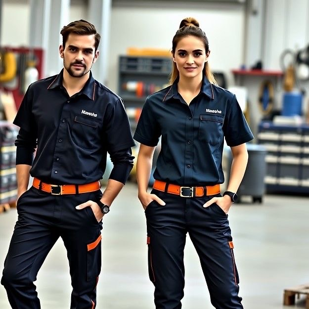
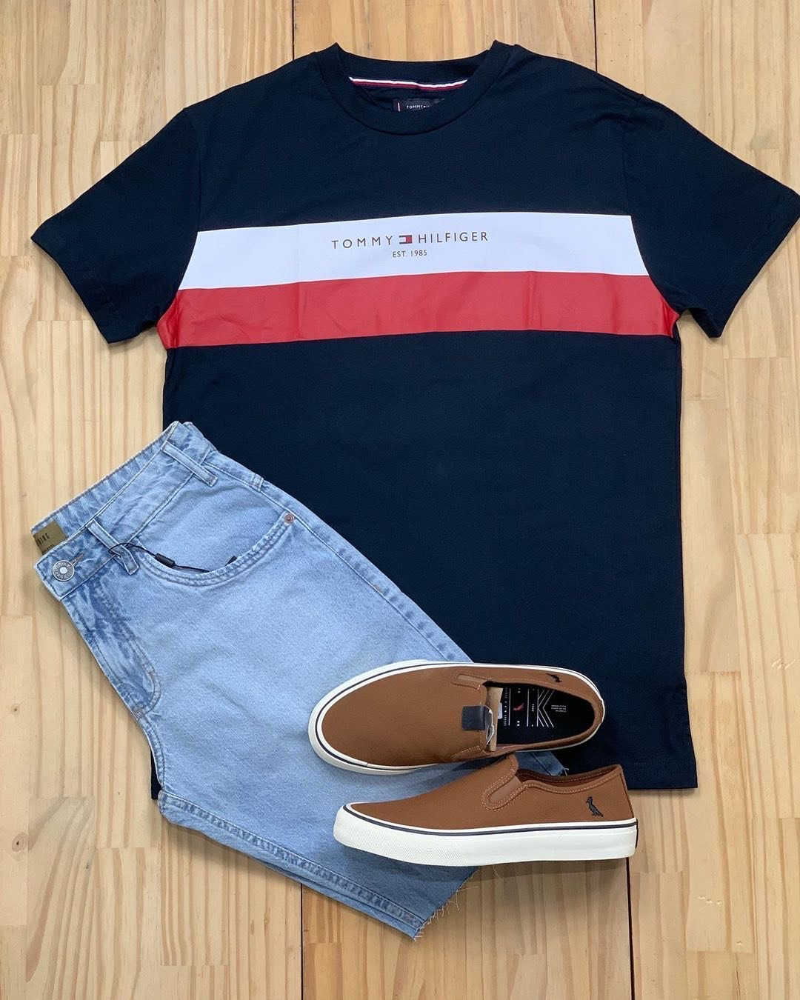
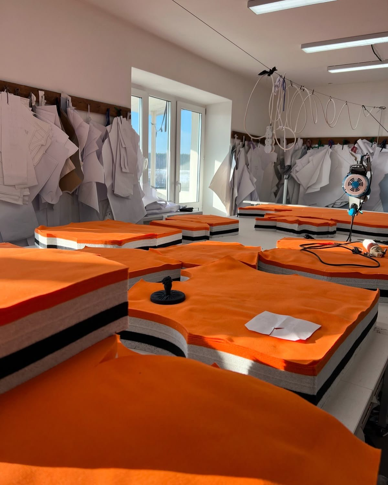
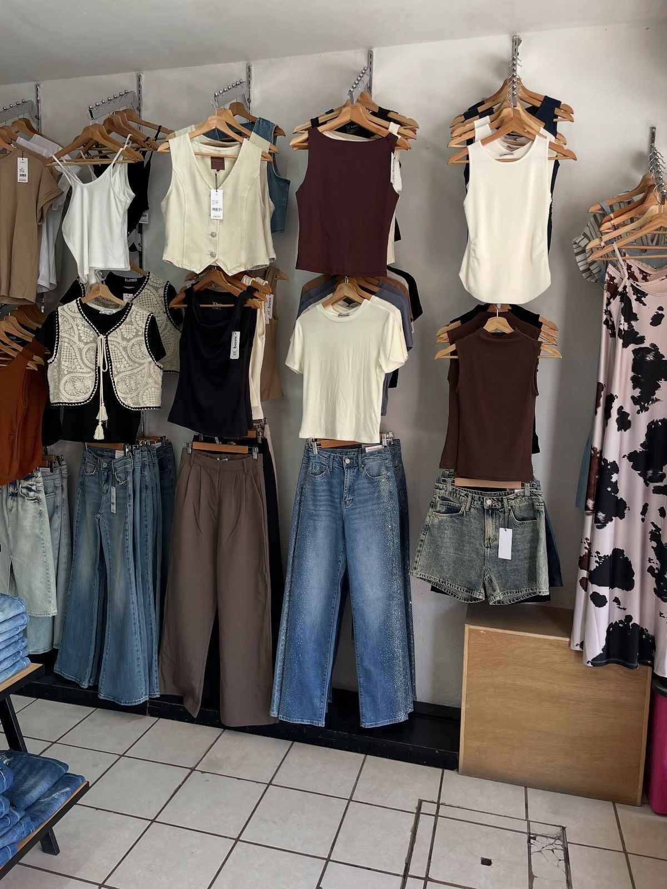

Presentación:
Misión:
Visión:
Textiles El Guarco fue fundada el 2022, con domicilio en Tejar de El Guarco, Cartago, 25mtrs norte del cementerio.
Su creación se dio por la amplia experiencia que tiene su socio fundador, Elmer Castro en la línea de textil, desde el 2005 se dedicaba a la importación y ventas de diferentes tipos de tela casual e industrial (army, denims 100% algodón, strech , etc.).
El Sr Castro, obtuvo tanto éxito en la importación y distribución de telas que decidió hacer su propia marca de ropa y empezó a subcontratar talleres donde le confeccionaban ropa para tiendas y empresas del mercado local. Cabe mencionar que todo el negocio lo manejaba a título personal y no fue hasta el año 2022 que nació la sociedad arriba mencionada.
En la transición de pasar de persona física a jurídica, se vio la necesidad de centralizar todo en un solo lugar y fue ahí donde se compró una propiedad para tener unas instalaciones propia y poder operar en condiciones totalmente adecuadas, para poder obtener el ciclo que conlleva hacer una prenda de calidad.
En las instalaciones contamos con los departamentos de corte y confección, diseño, bordado, sublimado, también contamos con máquinas de última tecnología y lo más importante contamos con colaboradores totalmente técnicos y profesionales para que nuestros clientes obtengan el mejor producto del mercado con eficiencia y responsabilidad
Creemos y estamos convencidos que la llave del éxito para la supervivencia de nuestra empresa es la calidad de los productos y servicios ofrecidos a nuestros clientes.
Fabricamos prendas de alto desempeño diseñadas para garantizar la seguridad y ergonomía del personal en entornos exigentes. Utilizamos textiles técnicos con alta resistencia mecánica al rasgado y protección química, asegurando una vida útil prolongada y máxima comodidad durante la jornada laboral.

Desarrollamos líneas de vestuario enfocadas en las últimas tendencias globales, fusionando estilo moderno con una funcionalidad excepcional para el uso diario. Nuestras prendas se distinguen por el uso de fibras naturales como algodón de alta calidad y lino, garantizando frescura, ligereza y una caída impecable que se adapta al ritmo de vida actual.

Ofrecemos un servicio especializado que abarca desde la creación de piezas exclusivas a medida hasta la producción masiva en serie de camisas, pantalones y accesorios textiles. Bajo rigurosos estándares de calidad y utilizando maquinaria de última generación, garantizamos acabados de alta gama en cada prenda, asegurando uniformidad y excelencia tanto en pedidos personalizados como en grandes volúmenes.

Le invitamos a visitar nuestra tienda física ubicada en nuestras instalaciones centrales en Cartago, donde podrá experimentar de primera mano la calidad de nuestros textiles y acabados. Al comprar directamente con el fabricante, usted accede a colecciones exclusivas y a precios de fábrica altamente competitivos, recibiendo asesoría personalizada por parte de nuestro equipo técnico para elegir la prenda ideal.

📍 Dirección: 25 mts norte del Cementerio de Tejar, El Guarco, Cartago, Costa Rica.
📞 Teléfono: 2551-1316
📧 Email: info@textileselguarco.com
📱 WhatsApp: 8657-7601